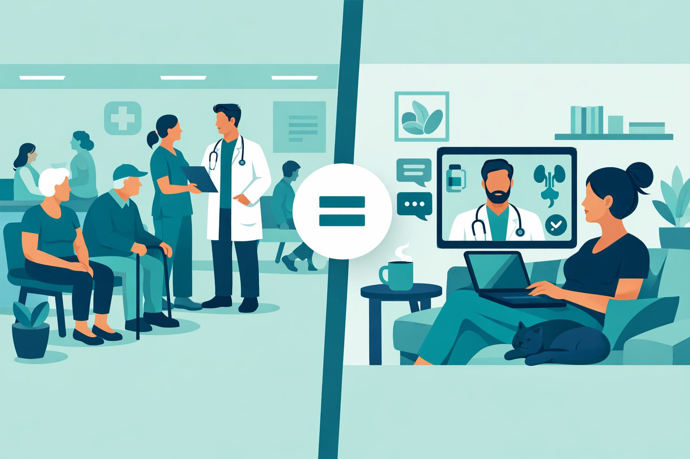

Key Takeaways
- In one large telehealth UTI program, 89.7% of treated patients who answered a seven-day follow-up survey reported symptom resolution, which the authors described as similar to published in-person rates. Only about 7% of visits had follow-up data.[1]
- In the same program, 94% of treated patients received an antibiotic recommended by the program's clinical protocol, which the authors based on IDSA guidance for uncomplicated UTI.[1]
- In that study, women who reported symptoms of a complicated UTI had seven-day resolution rates similar to women with uncomplicated symptoms, although the program's own protocol still recommended referring them to in-person care.[1]
- Three antibiotics received FDA approval for uncomplicated UTIs in 2024 and 2025 (pivmecillinam, gepotidacin, sulopenem), each with specific approved uses.[4][5][6]
- The quality of a virtual UTI visit depends on the physician's training and clinical judgment, not on the visit modality itself.
Why UTIs Are Well-Suited for Telehealth
Of the conditions commonly treated through telehealth, UTIs may be one of the best fits. The reason is straightforward: in otherwise healthy, premenopausal, non-pregnant women with classic symptoms, clinicians can often diagnose an uncomplicated UTI from the history and physical exam alone.[9]
A review of diagnostic studies in JAMA found that when a woman has one or more UTI symptoms, the probability of infection is about 50%, but specific combinations, such as painful urination and frequency without vaginal discharge or irritation, raise it to more than 90%, effectively ruling in the diagnosis from the history alone.[8] The same review found that history, examination and dipstick urinalysis cannot reliably rule a UTI out once symptoms are present.[8] When the picture is uncertain, testing may include a urine sample, urinalysis, urine culture or imaging.[9]
The Infectious Diseases Society of America (IDSA) and European Society for Microbiology and Infectious Diseases treatment guideline for acute uncomplicated cystitis limits that diagnosis to premenopausal, non-pregnant women with no known urological abnormalities or comorbidities, and notes that treatment of acute uncomplicated cystitis is usually empirical, meaning it starts before culture results are known.[10] The guideline does not address how the diagnosis itself is made.[10]
What matters is the thoroughness of that history. A skilled physician asks about symptom duration, severity, associated symptoms (fever, flank pain, nausea), sexual history, contraceptive use, prior UTI episodes, recent antibiotic use, allergies, and pregnancy status. Every one of those questions works just as well through a screen as it does across an exam table.
What the Research Shows: Real-World Outcomes
Skepticism about telehealth-delivered UTI care is reasonable, because any new care model should earn trust through data, not assumptions. Several large observational studies have now examined telehealth UTI programs. Their findings are encouraging, but none is a randomized comparison with in-person care.
The largest dataset comes from a 2023 retrospective analysis in PLOS ONE of a commercial, national telehealth UTI program, covering 51,474 visits by adult women between 2017 and 2021.[1] Among treated patients who answered a seven-day follow-up survey (3,521 people, about 7% of visits), 89.7% reported that their symptoms had resolved.[1] The study had no in-person group of its own. When the authors compared their rate with eight earlier published studies, seven of them of in-person care, it was significantly higher than four, lower than one, and not significantly different from three.[1] Overall, 2.2% of patients returned to the program within 30 days, which the authors read as suggesting low treatment failure and relapse, while noting they could not tell how many patients sought care elsewhere.[1] Across treated patients, 94.0% received an antibiotic recommended by the program's clinical protocol (nitrofurantoin, trimethoprim-sulfamethoxazole or fosfomycin), and the authors based that protocol on IDSA guidance for uncomplicated UTI.[1] All four authors were affiliated with the company that ran the program.[1]
That same study included patients who reported symptoms associated with complicated UTIs (for example fever or nausea) or vaginal infections, groups that earlier telehealth programs had typically excluded. Seven-day resolution among treated patients with complicated-UTI symptoms (87.9%) was similar to those with uncomplicated symptoms (90.8%).[1] The authors note that these groups were based on symptoms patients reported at intake, not on physicians' diagnoses, and that the program's protocol still recommended referring patients with complicated-UTI symptoms to in-person care.[1]
A 2020 study in the Journal of General Internal Medicine looked at 20,600 patients diagnosed with a UTI on a large nationwide direct-to-consumer telemedicine platform. Overall, 94% received an antibiotic, most often nitrofurantoin, and the authors concluded that most patients received guideline-concordant care.[3] Among the 6% of patients the authors classed as high risk (men, patients over 65, or those diagnosed with pyelonephritis), 69% received an antibiotic, and the authors called for efforts to make sure high-risk patients get proper follow-up.[3]
A 2026 scoping review in PLOS Digital Health looked more broadly at drug prescribing in virtual versus in-person physician visits. It included 22 studies (19 observational studies and 3 systematic reviews), of which three observational studies addressed UTI.[2] Most studies found no significant difference in medication or antibiotic prescribing rates, but results were mixed and the authors found no consensus.[2] One included study found higher antibiotic use in virtual visits for uncomplicated UTI, and the two studies that found more guideline-concordant antibiotic prescribing in virtual visits concerned viral infections and tonsillitis, not UTI.[2]

| Study | Sample Size | Key Finding | Year |
|---|---|---|---|
| Daumeyer et al., PLOS ONE[1] | 51,474 visits by adult women | 89.7% seven-day symptom resolution among the 3,521 treated patients with follow-up; 94% received a protocol-recommended antibiotic | 2023 |
| Rogers et al., PLOS Digital Health (scoping review)[2] | 22 studies (all drug prescribing, not UTI only) | Mixed results; most studies found no significant difference in prescribing rates; no consensus | 2026 |
| Rastogi et al., J Gen Intern Med[3] | 20,600 patients | Most patients received guideline-concordant care; 69% of high-risk patients received antibiotics | 2020 |
The Physician Factor: Why Board Certification Matters
The data above reflects programs staffed by licensed physicians. That distinction matters more than most patients realize. The quality of a virtual UTI visit doesn't depend on the technology; it depends on the person behind the screen.
A board-certified physician conducting a telehealth UTI evaluation performs the same systematic assessment as they would in a clinic: asking about symptom timeline, location, severity, aggravating factors, associated systemic symptoms (fever, chills, flank pain), sexual history, contraceptive method, prior UTI frequency, recent antibiotic exposure, drug allergies, and pregnancy status. That structured clinical reasoning is what separates a safe telehealth encounter from a risky one. It's also what distinguishes a physician-led visit from an AI chatbot or algorithm-only platform.
In clinical practice, clinicians think of telehealth UTI care as having two parts: recognizing what I can treat virtually, and recognizing what I should not. Red flags that prompt me to redirect a patient to in-person or emergency care include fever above 101°F, flank or costovertebral angle pain (suggesting kidney involvement), nausea or vomiting, pregnancy, immunosuppression, symptoms in male patients, failed prior antibiotic courses, and symptoms lasting longer than seven days. Fever above 101°F, back or side pain, chills, and nausea or vomiting can be signs of a kidney infection, which calls for prompt medical attention.[11] A careful history screens for these early in the visit, just as it would in a brick-and-mortar office.
The bottom line: the visit modality is secondary. What protects patients is the physician's ability to gather a reliable history, interpret it through clinical experience, and know when to escalate. That skill set doesn't change when the consultation happens over video.
New Treatment Options: FDA-Approved UTI Antibiotics (2024–2025)
For acute uncomplicated cystitis in healthy, non-pregnant, premenopausal women, CDC lists nitrofurantoin, trimethoprim-sulfamethoxazole (where local resistance is below 20%) and fosfomycin as appropriate first-line agents.[13] In 2024 and 2025, the FDA approved three additional oral antibiotics for uncomplicated UTI.[4][5][6]
| Drug (Brand) | FDA Approved | Class | Key Data |
|---|---|---|---|
| Pivmecillinam (Pivya) | April 2024[4] | Beta-lactam (mecillinam prodrug) | First approved in Europe more than 40 years before its US approval.[7] 62% composite response vs. 10% with placebo in one trial.[4] The 2010 IDSA guideline lists it as an appropriate choice where available and advises caution with other beta-lactams.[10] |
| Gepotidacin (Blujepa) | March 2025[5] | Triazaacenaphthylene (first-in-class) | Described by its maker as the first in a new class of oral antibiotics for uncomplicated UTI in nearly 30 years.[5] Non-inferior to nitrofurantoin in EAGLE-2 and EAGLE-3, and superior in EAGLE-3 (58.5% vs. 43.6% therapeutic success). Active against common uropathogens, including drug-resistant phenotypes.[12] |
| Sulopenem (Orlynvah) | October 2024[6] | Oral carbapenem (with probenecid) | Approved for adult women with limited or no alternative oral antibacterial options. In patients with ciprofloxacin-resistant pathogens, 48% composite response vs. 33% with ciprofloxacin.[6] |
All three of these medications can be prescribed during a telehealth visit. Their FDA approvals carry specific limits: sulopenem, for example, is approved only for adult women who have limited or no alternative oral antibacterial treatment options.[6]
When Is Telehealth Appropriate for UTIs, and When Isn't It?
Not every UTI belongs in a virtual visit. Knowing the boundary is part of responsible telehealth practice.
Appropriate for Virtual Evaluation
- Classic lower urinary tract symptoms (burning, frequency, urgency)
- Recurrent UTI with a known pattern and prior treatment history
- Non-pregnant, healthy adult women (18 and older)
- Need for antibiotic prescription adjustment or follow-up
- No fever, flank pain, or systemic symptoms
Seek In-Person or Emergency Care
- Fever above 101°F (38.3°C) or chills[11]
- Flank pain or back pain (possible kidney involvement)[11]
- Nausea, vomiting, or inability to keep fluids down[11]
- Pregnancy or suspected pregnancy
- Visible blood in urine (gross hematuria)
- Symptoms in male patients
- Immunocompromised status
- Failed prior antibiotic course[11]
- Symptoms lasting longer than 7 days
- Confusion or altered mental status[11]
For uncomplicated UTIs in women, the published evidence on virtual care is encouraging but limited. The largest study is a company-run retrospective analysis without its own in-person comparison group and with follow-up data from about 7% of visits,[1] and a 2026 scoping review found no consensus on how virtual and in-person prescribing differ.[2] In straightforward cases the diagnosis rests largely on a careful history, and treatment choices are guided by published guidelines. What makes the difference is the physician's training, clinical reasoning, and willingness to escalate when the clinical picture warrants it, not whether the visit happens over video or across an exam table.
When Should a UTI Send You to the ER?
Go to the emergency room or call 911 for any of these:
- Fever with shaking chills and pain in your back or side
- Vomiting that keeps you from holding down fluids or medicine
- Confusion, a racing heart, fast breathing, or feeling faint
- Visible blood in your urine
- Any urinary symptoms while you are pregnant
Get in-person care the same day for fever on its own, back or side pain on its own, urinary symptoms in a man, symptoms that are not improving 48 hours after starting an antibiotic, or symptoms that come back soon after treatment.
This red-flag list is the same on every UTI guide on this site. Sending visible blood in the urine and urinary symptoms in pregnancy to the emergency room is Dr. Bhavsar's deliberately cautious standard for these guides.
More UTI guides: UTI symptoms and antibiotics · When is a UTI an emergency? · How accurate are at-home UTI tests? · Reading AZO UTI test strip results · Does AZO treat a UTI? · UTI symptoms in women · Burning when you pee · Does D-mannose prevent UTIs?
Online UTI visits are for non-pregnant adult women (18+) with uncomplicated bladder symptoms: who an online UTI visit is for · what UTI treatment costs.
References
- Daumeyer NM, Kreitzberg D, Gavin KM, Bauer TA. "Real-world evidence: Telemedicine for complicated cases of urinary tract infection." PLOS ONE. 2023;18(2):e0280386. pmc.ncbi.nlm.nih.gov
- Rogers M, Hedden L, McGrail K, Law MR. "The impact of virtual care on drug prescribing practices: A scoping review." PLOS Digital Health. 2026;5(1):e0001192. pmc.ncbi.nlm.nih.gov
- Rastogi R, Martinez KA, Gupta N, Rood M, Rothberg MB. "Management of Urinary Tract Infections in Direct to Consumer Telemedicine." J Gen Intern Med. 2020;35(3):643-648. pmc.ncbi.nlm.nih.gov
- U.S. Food and Drug Administration. "FDA Approves New Treatment for Uncomplicated Urinary Tract Infections" (Pivya). April 24, 2024. fda.gov
- GSK. "Blujepa (gepotidacin) approved by US FDA for treatment of uncomplicated urinary tract infections (uUTIs)." Press release, March 25, 2025. us.gsk.com
- U.S. Food and Drug Administration. "FDA approves new treatment for uncomplicated urinary tract infections in adult women who have limited or no alternative oral antibiotic treatment options" (Orlynvah). October 24, 2024. fda.gov
- Lodise TP, Das AF, Frimodt-Møller N, et al. "Pivmecillinam for Treatment of Uncomplicated Urinary Tract Infection: New Efficacy Analysis." Clin Infect Dis. 2025;81(5):e285-e293. pmc.ncbi.nlm.nih.gov
- Bent S, Nallamothu BK, Simel DL, Fihn SD, Saint S. "Does this woman have an acute uncomplicated urinary tract infection?" JAMA. 2002;287(20):2701-2710. doi.org
- Centers for Disease Control and Prevention. "Clinical Overview of Urinary Tract Infections." July 16, 2026. Accessed November 15, 2026. cdc.gov
- Gupta K, Hooton TM, Naber KG, et al. "International clinical practice guidelines for the treatment of acute uncomplicated cystitis and pyelonephritis in women: A 2010 update by the Infectious Diseases Society of America and the European Society for Microbiology and Infectious Diseases." Clin Infect Dis. 2011;52(5):e103-e120. doi.org
- MedlinePlus (U.S. National Library of Medicine). "Urinary tract infection - adults." Review date July 22, 2026. Accessed November 15, 2026. medlineplus.gov
- Wagenlehner F, Perry CR, Hooton TM, et al. "Oral gepotidacin versus nitrofurantoin in patients with uncomplicated urinary tract infection (EAGLE-2 and EAGLE-3): two randomised, controlled, double-blind, double-dummy, phase 3, non-inferiority trials." Lancet. 2024;403(10428):741-755. doi.org
- Centers for Disease Control and Prevention. "Outpatient Clinical Care for Adults." April 16, 2024. Accessed November 15, 2026. cdc.gov